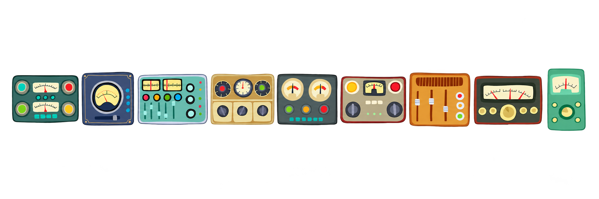

N days - PointValueByPeriodTime
Database CROD

ขั้นตอนที่ 1 : เลือกข้อมูลจุดวัดที่จะวาดกราฟ
ลองเชื่อมต่ออีกครั้ง
Reset
MW
MV
MVA
LINE
PEA
TX
สฟ. อปก
ไม่ 0
ไม่ V
ฐานข้อมูลจุดวัด CROD
กลุ่มข้อมูล
MW
MV
ขั้นตอนที่ 2 : เลือกช่วงวันที่ของข้อมูล
ช่วงวันที่สำเร็จรูป
กำหนดเอง
1 วันล่าสุด
7 วันล่าสุด
30 วันล่าสุด
90 วันล่าสุด
เดือนนี้
เดือนที่แล้ว
สามเดือนที่แล้ว
แยกแกน Y ซ้าย/ขวา
ช่วงข้อมูล 00:00 ของวันแรก ถึง 23:30 ของวันสุดท้าย · วันล่าสุดนับวันเต็มถึงเมื่อวาน
วันที่เริ่มต้น
เลือกวันที่
วันที่สิ้นสุด
เลือกวันที่
แสดงกราฟ
‹
›